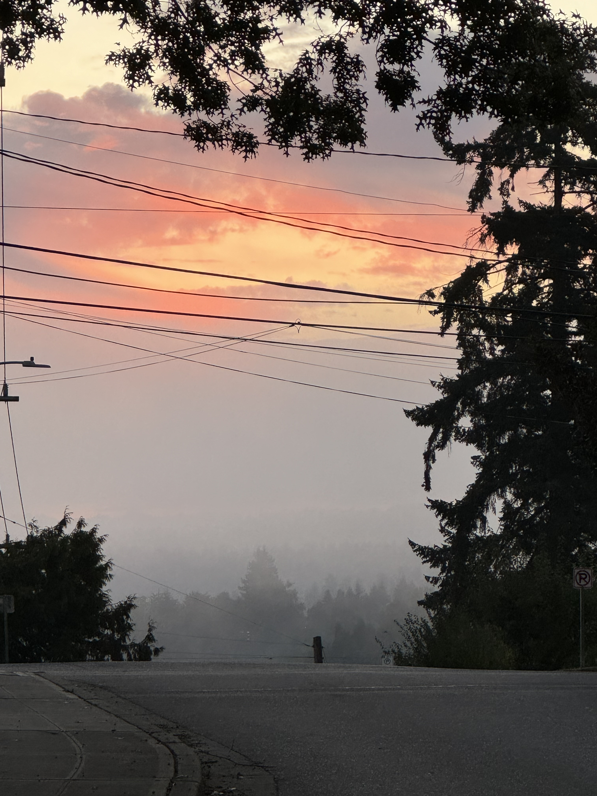

Triumphant music swells in the background… Duh duh duhhh!!!
Welcome back to my personal biomedical data science blog, [VS]Codes! It’s so great to be back writing on my platform and connecting with you all once again. I’m very happy to share that my brief hiatus from this blog was extremely productive and gave me a much-needed break - even though I am (finally) no longer in school, the month of September still presented an uptick in obligations as colleagues returned from their summer vacations, and I found myself struggling to balance my other deliverables with my writing for this blog. Indeed, by the middle of August, I found myself feeling more stressed than excited each time I had to produce new content. Now, however, I am re-energized and ready to fill your headspaces once again :) In the spirit of my (self-inflicted) burnout over the past couple of months, I thought it most appropriate to write today about a topic dear to my heart: work-life harmony.
Work-life harmony is not a new idea by any means, but it exists as a stark reminder of the deficits of its more well-known counterpart: work-life balance. So let’s dive a little deeper into the differences between these two terms.

Work-life balance
Work-life balance emphasizes the need to have a split between your professional and personal lives. The goal of this paradigm is to ensure that clear boundaries exist between the two “most important” parts of your life - when you are at work, you are fully focused on your work. And when you are out of work, you are fully focused on your personal life. The split between one’s personal and professional lives doesn’t need to be exactly 50/50 (maybe it’s 40/60 or 70/30), but there should be a relative “balance” in how much time is offered to both. The work-life balance mindset works great for many individuals, particularly for those who have to work in-person for their professional commitments. In these cases, coming home from the workday becomes a mandatory unplugging from the demands of professional life.
However, for individuals without these forced boundaries (i.e. hybrid/remote workers), maintaining a balance between work and life can end up being more stress-inducing than relaxing! When you are forced to self-define the boundaries between work and life, you may end up feeling guilty every time work eats into your time with your family, or every time personal duties or free time pull you away from a commitment or responsibility you were expected to complete at work. Ultimately, for some people, the pursuit of a work-life balance can cause them to fall between the cracks. They can never feel completely present at work or at home - rather than being there for the people around them, they are trapped in a spiral of guilt.
Work-life harmony
The paradigm of work-life harmony serves as a “reframing” of work-life balance. Where work-life balance aims to define clear boundaries between our personal and professional lives, work-life harmony emphasizes the inherent interconnectedness of these aspects of ourselves. The adage of “you are not your job” is certainly true, but at the same time, the work that you do everyday and the output that you produce are a major part of your identity! Attempting to fully silo these aspects of yourselves from the rest of your life is often more harmful than helpful.
Work-life harmony emphasizes flexibility over rigidity - there is no need to feel ashamed if you think about your work when you’re on vacation. In fact, especially if you are excited and passionate about the work that you’re doing, then it is only natural that you will think about it outside of your workday! In a similar vein, there is no need to feel guilty if you want to take time away in the middle of a workday to spend time with your family or to prioritize your health. At the end of the day, we should measure ourselves not by how much continuous time we have spent on a given task, but instead by the positive impact that we have on others and the contributions that we make toward society. Ultimately, if we focus more on showing up for ourselves and leading our days in a manner that is most fulfilling with respect to our own needs, then we will be able to show up a hundred times over for our personal and professional obligations.
The law of averages
The last point I want to end on today is a key piece of advice I received in the first week of my job from the head of my department, Jeff Leek. When I asked him how he was able to juggle the multitude of commitments that he faced daily, he (fittingly) responded to me with a statistical principle: “Follow the law of averages!”
This rule states that if you repeat a random event a sufficient number of times, the average outcome of the event will tend to converge toward an expected value. Sure, we may see outliers in our data every once in a while, but individual short-term fluctuations in outcomes do not matter - what matters at the end of the day is the expected value.
In a similar vein, we can treat each day of our lives as an individual outcome. It doesn’t necessarily matter if we have short-term fluctuations or trends in our data… as long as we hit our expected averages. If there’s an important work deadline coming up or you just find yourself particularly excited about a project that you’re working on, then spend time for a week or two outside of your 9-5 going relentlessly after those goals. And if you find yourself feeling a lack of motivation on a given day or have to take time off for a couple of weeks to attend to a friend or family member in need, then do so without guilt. Ultimately, by following the law of averages, we can ensure that we’re staying flexible with respect to our requirements and showing up fully for ourselves and our loved ones.
Additional resources
Hopefully my personal interpretation of the differences between work-life harmony and balance was useful to you! At the same time, as I mentioned earlier in this post, work-life harmony is not a new concept, and there are several resources freely available online that go into more detail and provide more varied perspectives. Here are some additional links related to work-life harmony (and a video on the law of averages) that you may find informative:
- “From Work-Life Balance to Work-Life Harmony: A New Path for High Achievers,” by Chibs Okereke
- “What Is Work-Life Balance vs. Work-Life Harmony?” by Maryville University
- “What is Work-Life Harmony? (and how you can achieve it),” by Afoma Umesi
- “Law of Averages - How To Be Successful In Anything You do,” by Improvement Pill
This concludes my blog post for today - It’s great to be posting again, and I look forward to sharing similarly styled overviews of work concepts and paradigms in the future. My cadence of blog posts may shift from weekly to bi-weekly depending on work commitments, but I will definitely be back soon! Until next time!